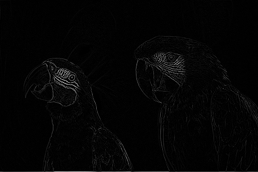
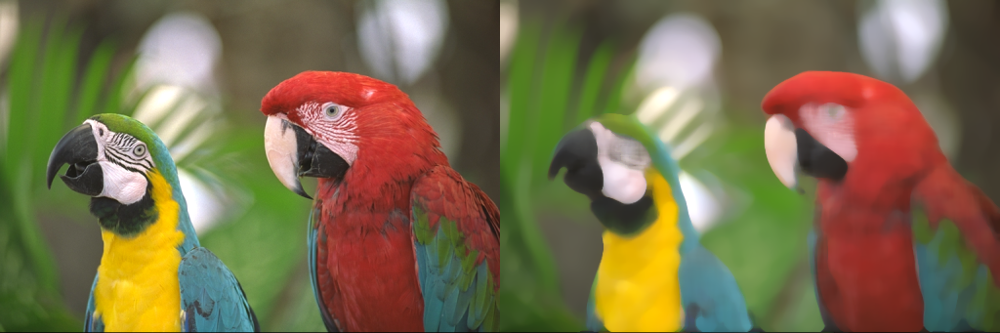
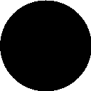
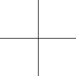
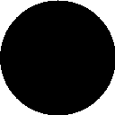
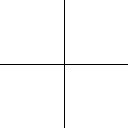
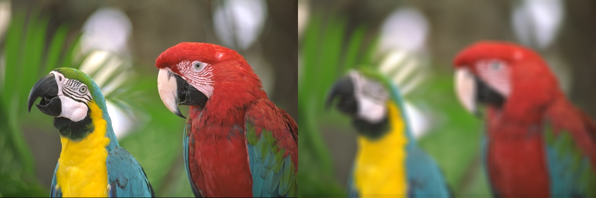

| Safe Haskell | None |
|---|---|
| Language | Haskell2010 |
OpenCV.ImgProc.ImgFiltering
Description
Functions and classes described in this section are used to perform various
linear or non-linear filtering operations on 2D images (represented as
Mat(x,y) in the source image
(normally, rectangular), its neighborhood is considered and used to compute the
response. In case of a linear filter, it is a weighted sum of pixel values. In
case of morphological operations, it is the minimum or maximum values, and so
on. The computed response is stored in the destination image at the same
location (x,y). It means that the output image will be of the same size as the
input image. Normally, the functions support multi-channel arrays, in which case
every channel is processed independently. Therefore, the output image will also
have the same number of channels as the input one.
Another common feature of the functions and classes described in this section is
that, unlike simple arithmetic functions, they need to extrapolate values of
some non-existing pixels. For example, if you want to smooth an image using a
Gaussian 3x3 filter, then, when processing the left-most pixels in each
row, you need pixels to the left of them, that is, outside of the image. You can
let these pixels be the same as the left-most image pixels ("replicated border"
extrapolation method), or assume that all the non-existing pixels are zeros
("constant border" extrapolation method), and so on. OpenCV enables you to
specify the extrapolation method.
- data MorphShape
- data MorphOperation
- laplacian :: forall shape channels srcDepth dstDepth. ToDepth (Proxy dstDepth) => Maybe Int32 -> Maybe Double -> Maybe Double -> Maybe BorderMode -> Mat shape channels srcDepth -> CvExcept (Mat shape channels (S dstDepth))
- medianBlur :: (depth `In` '[Word8, Word16, Float], channels `In` '[1, 3, 4]) => Mat shape (S channels) (S depth) -> Int32 -> CvExcept (Mat shape (S channels) (S depth))
- erode :: (IsPoint2 point2 Int32, depth `In` '[Word8, Word16, Int16, Float, Double]) => Mat shape channels (S depth) -> Maybe (Mat (S '[sh, sw]) (S 1) (S Word8)) -> Maybe (point2 Int32) -> Int -> BorderMode -> CvExcept (Mat shape channels (S depth))
- dilate :: (IsPoint2 point2 Int32, depth `In` '[Word8, Word16, Int16, Float, Double]) => Mat shape channels (S depth) -> Maybe (Mat (S '[sh, sw]) (S 1) (S Word8)) -> Maybe (point2 Int32) -> Int -> BorderMode -> CvExcept (Mat shape channels (S depth))
- filter2D :: (IsPoint2 point2 Int32, depth `In` '[Word8, Word16, Int16, Float, Double]) => Mat shape channels (S depth) -> Mat (S '[sh, sw]) (S 1) (S Double) -> Maybe (point2 Int32) -> Double -> BorderMode -> CvExcept (Mat shape channels (S depth))
- morphologyEx :: (IsPoint2 point2 Int32, depth `In` '[Word8, Word16, Int16, Float, Double]) => Mat shape channels (S depth) -> MorphOperation -> Mat D D D -> Maybe (point2 Int32) -> Int -> BorderMode -> CvExcept (Mat shape channels (S depth))
- getStructuringElement :: (ToInt32 height, ToInt32 width) => MorphShape -> height -> width -> CvExcept (Mat (ShapeT (height ::: (width ::: Z))) (S 1) (S Word8))
- blur :: (depth `In` '[Word8, Word16, Int16, Float, Double], IsSize size Int32) => size Int32 -> Mat shape (S channels) (S depth) -> CvExcept (Mat shape (S channels) (S depth))
- gaussianBlur :: (depth `In` '[Word8, Word16, Float, Double], IsSize size Int32) => size Int32 -> Double -> Double -> Mat shape (S channels) (S depth) -> CvExcept (Mat shape (S channels) (S depth))
Documentation
data MorphShape Source #
Constructors
| MorphRect | A rectangular structuring element. |
| MorphEllipse | An elliptic structuring element, that is, a filled ellipse inscribed into the rectangle Rect(0, 0, esize.width, 0.esize.height). |
| MorphCross !Point2i | A cross-shaped structuring element. |
data MorphOperation Source #
Constructors
| MorphOpen | An opening operation: dilate . erode |
| MorphClose | A closing operation: erode . dilate |
| MorphGradient | A morphological gradient: dilate - erode |
| MorphTopHat | "top hat": src - open |
| MorphBlackHat | "black hat": close - src |
Arguments
| :: ToDepth (Proxy dstDepth) | |
| => Maybe Int32 | Aperture size used to compute the second-derivative filters. The size must be positive and odd. Default value is 1. |
| -> Maybe Double | Optional scale factor for the computed Laplacian values. Default value is 1. |
| -> Maybe Double | Optional delta value that is added to the results. Default value is 0. |
| -> Maybe BorderMode | Pixel extrapolation method. |
| -> Mat shape channels srcDepth | |
| -> CvExcept (Mat shape channels (S dstDepth)) |
Calculates the Laplacian of an image
The function calculates the Laplacian of the source image by adding up the second x and y derivatives calculated using the Sobel operator.
Example:
laplacianImg
:: forall shape channels depth
. (Mat shape channels depth ~ Birds_512x341)
=> Mat shape ('S 1) ('S Double)
laplacianImg = exceptError $ do
imgG <- cvtColor bgr gray birds_512x341
laplacian Nothing Nothing Nothing Nothing imgG

Arguments
| :: (depth `In` '[Word8, Word16, Float], channels `In` '[1, 3, 4]) | |
| => Mat shape (S channels) (S depth) | Input 1-, 3-, or 4-channel image; when ksize is 3 or 5, the image
depth should be |
| -> Int32 | Aperture linear size; it must be odd and greater than 1, for example: 3, 5, 7... |
| -> CvExcept (Mat shape (S channels) (S depth)) |
Blurs an image using the median filter
Example:
medianBlurImg
:: forall (width :: Nat)
(width2 :: Nat)
(height :: Nat)
(channels :: Nat)
(depth :: *)
. ( Mat (ShapeT [height, width]) ('S channels) ('S depth) ~ Birds_512x341
, width2 ~ ((*) width 2) -- TODO (RvD): HSE parse error with infix type operator
)
=> Mat (ShapeT [height, width2]) ('S channels) ('S depth)
medianBlurImg = exceptError $
withMatM (Proxy :: Proxy [height, width2])
(Proxy :: Proxy channels)
(Proxy :: Proxy depth)
white $ imgM -> do
birdsBlurred <- pureExcept $ medianBlur birds_512x341 13
matCopyToM imgM (V2 0 0) birds_512x341 Nothing
matCopyToM imgM (V2 w 0) birdsBlurred Nothing
where
w = fromInteger $ natVal (Proxy :: Proxy width)

Arguments
| :: (IsPoint2 point2 Int32, depth `In` '[Word8, Word16, Int16, Float, Double]) | |
| => Mat shape channels (S depth) | Input image. |
| -> Maybe (Mat (S '[sh, sw]) (S 1) (S Word8)) | Structuring element used for erosion. If |
| -> Maybe (point2 Int32) | anchor |
| -> Int | iterations |
| -> BorderMode | |
| -> CvExcept (Mat shape channels (S depth)) |
Erodes an image by using a specific structuring element
Example:
erodeImg
:: forall (width :: Nat)
(width2 :: Nat)
(height :: Nat)
(channels :: Nat)
(depth :: *)
. ( Mat (ShapeT [height, width]) ('S channels) ('S depth) ~ Lambda
, width2 ~ ((*) width 2) -- TODO (RvD): HSE parse error with infix type operator
)
=> Mat (ShapeT [height, width2]) ('S channels) ('S depth)
erodeImg = exceptError $
withMatM (Proxy :: Proxy [height, width2])
(Proxy :: Proxy channels)
(Proxy :: Proxy depth)
white $ imgM -> do
erodedLambda <-
pureExcept $ erode lambda Nothing (Nothing :: Maybe Point2i) 5 BorderReplicate
matCopyToM imgM (V2 0 0) lambda Nothing
matCopyToM imgM (V2 w 0) erodedLambda Nothing
where
w = fromInteger $ natVal (Proxy :: Proxy width)

Arguments
| :: (IsPoint2 point2 Int32, depth `In` '[Word8, Word16, Int16, Float, Double]) | |
| => Mat shape channels (S depth) | Input image. |
| -> Maybe (Mat (S '[sh, sw]) (S 1) (S Word8)) | Structuring element used for dilation. If |
| -> Maybe (point2 Int32) | anchor |
| -> Int | iterations |
| -> BorderMode | |
| -> CvExcept (Mat shape channels (S depth)) |
Dilates an image by using a specific structuring element
Example:
dilateImg
:: forall (width :: Nat)
(width2 :: Nat)
(height :: Nat)
(channels :: Nat)
(depth :: *)
. ( Mat (ShapeT [height, width]) ('S channels) ('S depth) ~ Lambda
, width2 ~ ((*) width 2) -- TODO (RvD): HSE parse error with infix type operator
)
=> Mat (ShapeT [height, width2]) ('S channels) ('S depth)
dilateImg = exceptError $
withMatM (Proxy :: Proxy [height, width2])
(Proxy :: Proxy channels)
(Proxy :: Proxy depth)
white $ imgM -> do
dilatedLambda <-
pureExcept $ dilate lambda Nothing (Nothing :: Maybe Point2i) 3 BorderReplicate
matCopyToM imgM (V2 0 0) lambda Nothing
matCopyToM imgM (V2 w 0) dilatedLambda Nothing
where
w = fromInteger $ natVal (Proxy :: Proxy width)

Arguments
| :: (IsPoint2 point2 Int32, depth `In` '[Word8, Word16, Int16, Float, Double]) | |
| => Mat shape channels (S depth) | Input image. |
| -> Mat (S '[sh, sw]) (S 1) (S Double) | convolution kernel (or rather a correlation kernel), a single-channel floating point matrix; if you want to apply different kernels to different channels, split the image into separate color planes using split and process them individually. |
| -> Maybe (point2 Int32) | anchor |
| -> Double | delta |
| -> BorderMode | |
| -> CvExcept (Mat shape channels (S depth)) |
Convolves an image with the kernel.
Example:
filter2DImg
:: forall (width :: Nat)
(width2 :: Nat)
(height :: Nat)
(channels :: Nat)
(depth :: *)
. ( Mat (ShapeT [height, width]) ('S channels) ('S depth) ~ Birds_512x341
, width2 ~ ((*) width 2) -- TODO (RvD): HSE parse error with infix type operator
)
=> Mat (ShapeT [height, width2]) ('S channels) ('S depth)
filter2DImg = exceptError $
withMatM (Proxy :: Proxy [height, width2])
(Proxy :: Proxy channels)
(Proxy :: Proxy depth)
white $ imgM -> do
filteredBird <-
pureExcept $ filter2D birds_512x341 kernel (Nothing :: Maybe Point2i) 0 BorderReplicate
matCopyToM imgM (V2 0 0) birds_512x341 Nothing
matCopyToM imgM (V2 w 0) filteredBird Nothing
where
w = fromInteger $ natVal (Proxy :: Proxy width)
kernel =
exceptError $
withMatM (Proxy :: Proxy [3, 3])
(Proxy :: Proxy 1)
(Proxy :: Proxy Double)
black $ imgM -> do
lift $ line imgM (V2 0 0 :: V2 Int32) (V2 0 0 :: V2 Int32) (V4 (-2) (-2) (-2) 1 :: V4 Double) 0 LineType_8 0
lift $ line imgM (V2 1 0 :: V2 Int32) (V2 0 1 :: V2 Int32) (V4 (-1) (-1) (-1) 1 :: V4 Double) 0 LineType_8 0
lift $ line imgM (V2 1 1 :: V2 Int32) (V2 1 1 :: V2 Int32) (V4 1 1 1 1 :: V4 Double) 0 LineType_8 0
lift $ line imgM (V2 1 2 :: V2 Int32) (V2 2 1 :: V2 Int32) (V4 1 1 1 1 :: V4 Double) 0 LineType_8 0
lift $ line imgM (V2 2 2 :: V2 Int32) (V2 2 2 :: V2 Int32) (V4 2 2 2 1 :: V4 Double) 0 LineType_8 0

Arguments
| :: (IsPoint2 point2 Int32, depth `In` '[Word8, Word16, Int16, Float, Double]) | |
| => Mat shape channels (S depth) | Source image. |
| -> MorphOperation | Type of a morphological operation. |
| -> Mat D D D | Structuring element. |
| -> Maybe (point2 Int32) | Anchor position with the kernel. |
| -> Int | Number of times erosion and dilation are applied. |
| -> BorderMode | |
| -> CvExcept (Mat shape channels (S depth)) |
Performs advanced morphological transformations
getStructuringElement Source #
Arguments
| :: (ToInt32 height, ToInt32 width) | |
| => MorphShape | |
| -> height | |
| -> width | |
| -> CvExcept (Mat (ShapeT (height ::: (width ::: Z))) (S 1) (S Word8)) |
Returns a structuring element of the specified size and shape for morphological operations
Example:
type StructureImg = Mat (ShapeT [128, 128]) ('S 1) ('S Word8)
structureImg :: MorphShape -> StructureImg
structureImg shape = exceptError $ do
mat <- getStructuringElement shape (Proxy :: Proxy 128) (Proxy :: Proxy 128)
img <- matConvertTo (Just 255) Nothing mat
bitwiseNot img
morphRectImg :: StructureImg
morphRectImg = structureImg MorphRect
morphEllipseImg :: StructureImg
morphEllipseImg = structureImg MorphEllipse
morphCrossImg :: StructureImg
morphCrossImg = structureImg $ MorphCross $ toPoint (pure (-1) :: V2 Int32)
 



Arguments
| :: (depth `In` '[Word8, Word16, Int16, Float, Double], IsSize size Int32) | |
| => size Int32 | Blurring kernel size. |
| -> Mat shape (S channels) (S depth) | |
| -> CvExcept (Mat shape (S channels) (S depth)) |
Blurs an image using a box filter.
Example:
boxBlurImg
:: forall (width :: Nat)
(width2 :: Nat)
(height :: Nat)
(channels :: Nat)
(depth :: *)
. ( Mat (ShapeT [height, width]) ('S channels) ('S depth) ~ Birds_512x341
, width2 ~ ((*) width 2) -- TODO (RvD): HSE parse error with infix type operator
)
=> Mat (ShapeT [height, width2]) ('S channels) ('S depth)
boxBlurImg = exceptError $
withMatM (Proxy :: Proxy [height, width2])
(Proxy :: Proxy channels)
(Proxy :: Proxy depth)
white $ imgM -> do
birdsBlurred <- pureExcept $ blur (V2 13 13 :: V2 Int32) birds_512x341
matCopyToM imgM (V2 0 0) birds_512x341 Nothing
matCopyToM imgM (V2 w 0) birdsBlurred Nothing
where
w = fromInteger $ natVal (Proxy :: Proxy width)
